Seven Sentenced in South Wales Drug Trafficking Case
Seven people were sentenced to a total of 54 years in prison for selling drugs and buying firearms on the darkweb.
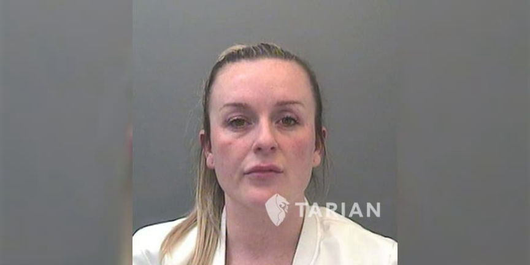
A press release from the Tarian Regional Organised Crime Unit in Southern Wales highlighted the sentencing of members of an organized crime group.<h2 id="encrochat">EncroChat? </h2>
Investigators had the evidence they needed to dismantle the group after its “encrypted drug deal chats were cracked.” Although the announcement does not identify the source of the decrypted chats, I suspect they came from EncroChat. Law enforcement agencies in Wales have arrested several so-called “organised crime gangs” operating in Wales, including at least one other case involving illegal firearm deals.
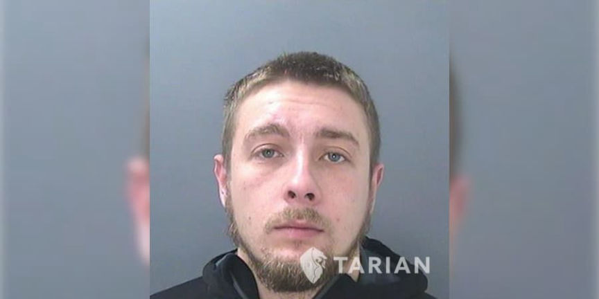
“The French National Gendarmerie, assisted by law enforcement in the Netherlands, installed malware on EncroChat servers in France. “The malware allowed them to read messages before they were sent and record lock screen passwords,” according to a Wikipedia entry on the company. The malware affected more than half the devices in Europe, according to the company. Law enforcement agencies worldwide received access to the data pulled from the hacked EncroChat server.”
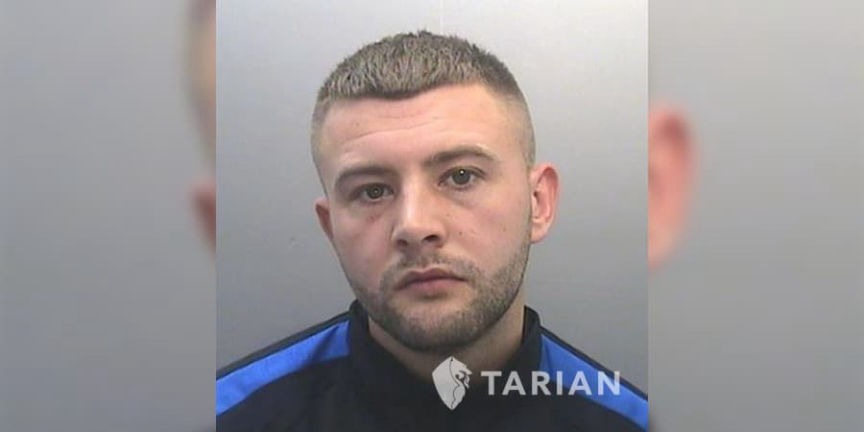
<h2 id="firearms-and-silencers">Firearms and Silencers </h2>
During the investigation into the organized crime group, “detectives uncovered chats on the dark web about purchasing and importing firearms and silencers.” Some of the defendants possessed firearms and ammunition.
I suspect the firearms possessed by defendants originated from firearms sellers in the real world; as with murder-for-hire cases, firearm sellers on the darkweb are scammers or feds.
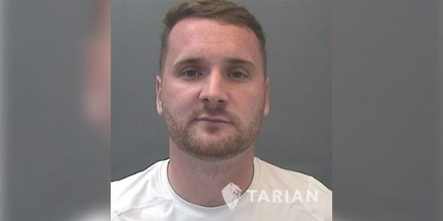
Police seized £4,942,800 worth of Class A & B drugs during the investigation, including 70 kilos of Cocaine, 30 kilos of Heroin, 96 kilos of Amphetamine, and 19 kilos of Cannabis.<h2 id="sentencing">Sentencing </h2>
One defendant faced drug and firearms charges:[list]*Jay Abdul, 39, was sentenced to 19 years and six months for conspiracy to supply Class A & B drugs and possessing a Section 5 prohibited firearm.[/list]
The remaining defendants faced charges for conspiracy to supply Class A & B drugs:[list]*Aysha Ali, 36, was sentenced to four years and six months;*Neesha Ali, 40, was sentenced to three years and nine months;*Ryan Hales, 28, was sentenced to 11 years and three months;*Marc Harris, 31, was sentenced to seven years and four months;*Naisha Hembury, 35, was sentenced to 22 months suspended for 18 months; and*Max Smith, 25, was sentenced to five years and three months in prison.[/list]
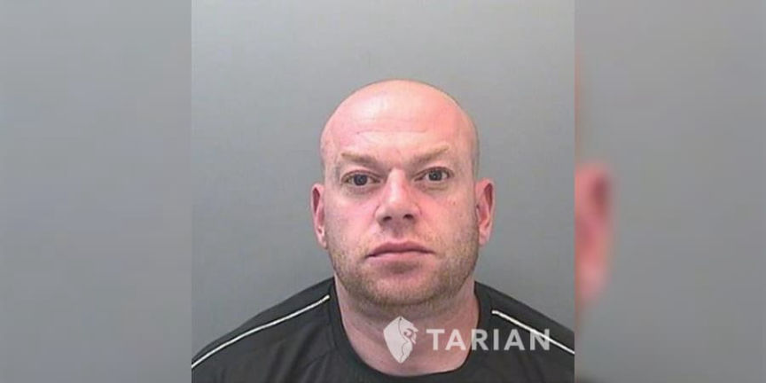
Tarian Detective Inspector Gareth Grant said:
“The safeguarding of our communities will always be our priority. Whilst the seizure of the firearms during this investigation is very disturbing I want to reassure people that guns like this are, thankfully, very unusual here in south Wales. Such was the weight of evidence against the majority of these defendants that he had no option but to enter guilty pleas. This is down to the hard work and dedication of my investigation team. The success of this investigation demonstrates that we will relentlessly pursue those involved in large scale criminality to ensure effective justice is sought against such individuals and they are brought to justice.”
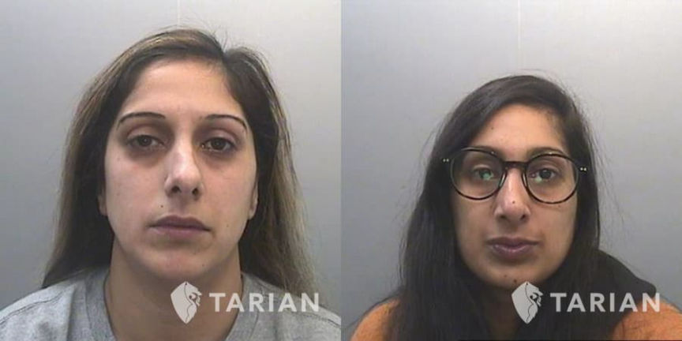
SEVEN PEOPLE JAILED FOR PART IN DRUG GANG | archive.is, tarianrocu.org.uk
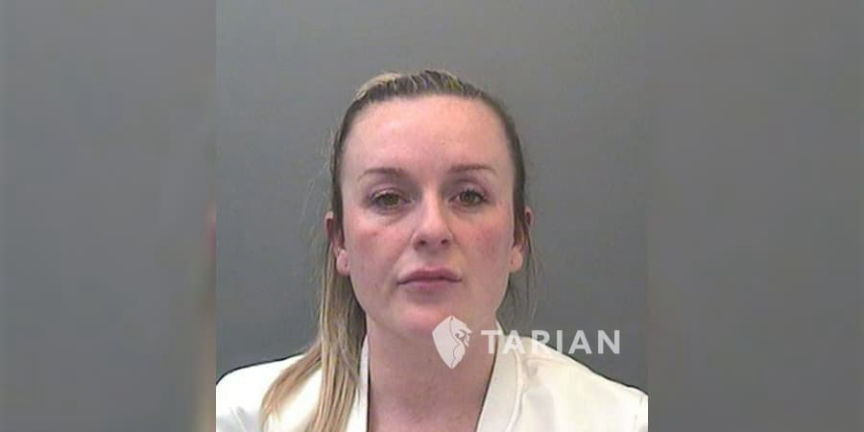
Naisha Hembury
A press release from the Tarian Regional Organised Crime Unit in Southern Wales highlighted the sentencing of members of an organized crime group.<h2 id="encrochat">EncroChat? </h2>
Investigators had the evidence they needed to dismantle the group after its “encrypted drug deal chats were cracked.” Although the announcement does not identify the source of the decrypted chats, I suspect they came from EncroChat. Law enforcement agencies in Wales have arrested several so-called “organised crime gangs” operating in Wales, including at least one other case involving illegal firearm deals.
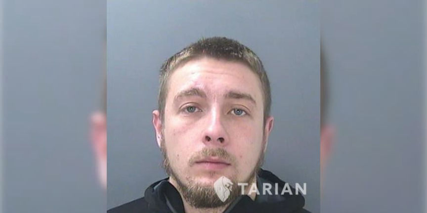
Max Smith
“The French National Gendarmerie, assisted by law enforcement in the Netherlands, installed malware on EncroChat servers in France. “The malware allowed them to read messages before they were sent and record lock screen passwords,” according to a Wikipedia entry on the company. The malware affected more than half the devices in Europe, according to the company. Law enforcement agencies worldwide received access to the data pulled from the hacked EncroChat server.”
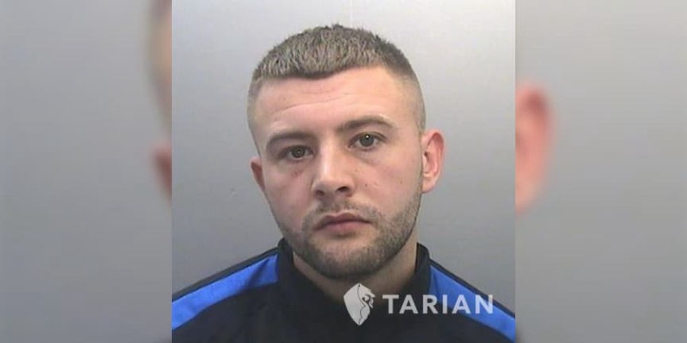
Ryan Hales
<h2 id="firearms-and-silencers">Firearms and Silencers </h2>
During the investigation into the organized crime group, “detectives uncovered chats on the dark web about purchasing and importing firearms and silencers.” Some of the defendants possessed firearms and ammunition.
I suspect the firearms possessed by defendants originated from firearms sellers in the real world; as with murder-for-hire cases, firearm sellers on the darkweb are scammers or feds.
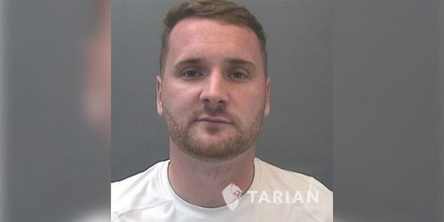
Marc Harris
Police seized £4,942,800 worth of Class A & B drugs during the investigation, including 70 kilos of Cocaine, 30 kilos of Heroin, 96 kilos of Amphetamine, and 19 kilos of Cannabis.<h2 id="sentencing">Sentencing </h2>
One defendant faced drug and firearms charges:[list]*Jay Abdul, 39, was sentenced to 19 years and six months for conspiracy to supply Class A & B drugs and possessing a Section 5 prohibited firearm.[/list]
The remaining defendants faced charges for conspiracy to supply Class A & B drugs:[list]*Aysha Ali, 36, was sentenced to four years and six months;*Neesha Ali, 40, was sentenced to three years and nine months;*Ryan Hales, 28, was sentenced to 11 years and three months;*Marc Harris, 31, was sentenced to seven years and four months;*Naisha Hembury, 35, was sentenced to 22 months suspended for 18 months; and*Max Smith, 25, was sentenced to five years and three months in prison.[/list]
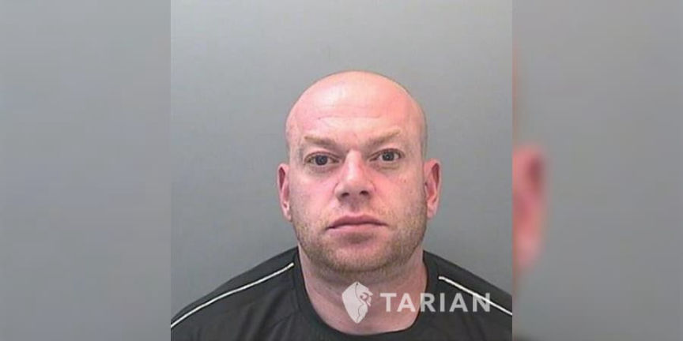
Jay Abdul
Tarian Detective Inspector Gareth Grant said:
“The safeguarding of our communities will always be our priority. Whilst the seizure of the firearms during this investigation is very disturbing I want to reassure people that guns like this are, thankfully, very unusual here in south Wales. Such was the weight of evidence against the majority of these defendants that he had no option but to enter guilty pleas. This is down to the hard work and dedication of my investigation team. The success of this investigation demonstrates that we will relentlessly pursue those involved in large scale criminality to ensure effective justice is sought against such individuals and they are brought to justice.”
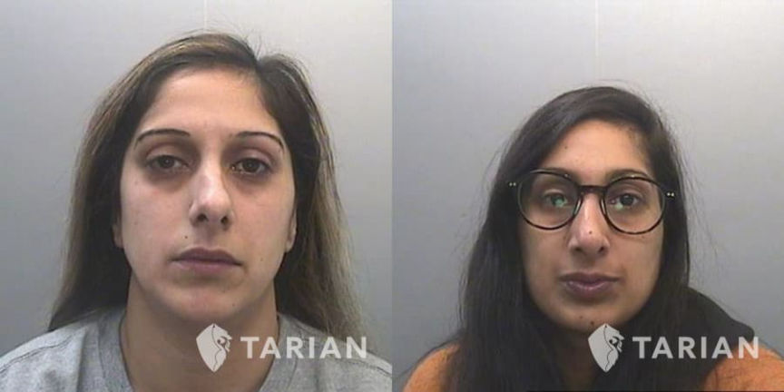
Aysha Ali and Neesha Ali
SEVEN PEOPLE JAILED FOR PART IN DRUG GANG | archive.is, tarianrocu.org.uk